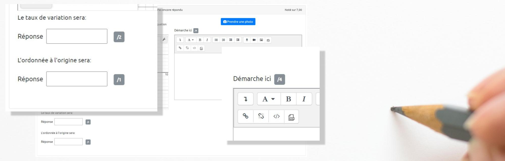
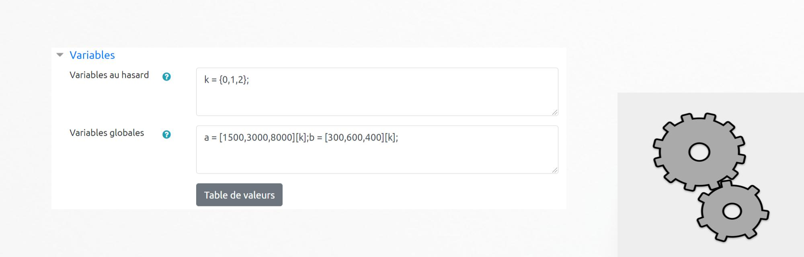
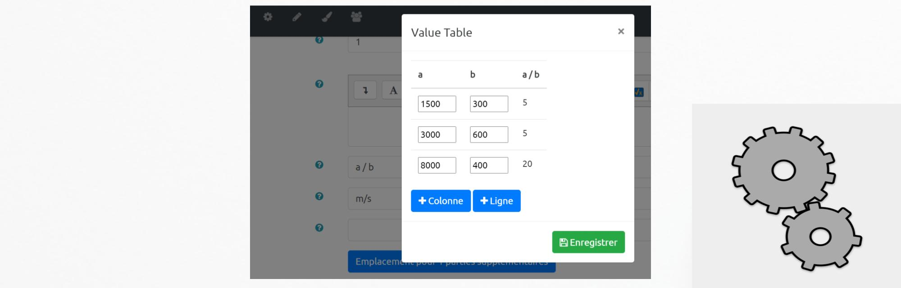
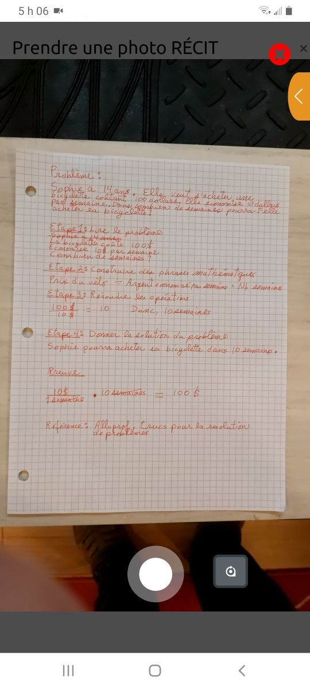

The question "Formulas with steps" allows the teacher to administer a test in a digital format that contains questions requiring assessment of steps. This type of question allows for direct photo taking through any type of current device (laptop, Chromebook, tablet, mobile device). The student also has the option to attach a file. A table of values generates random numbers presented to the students.
Therefore, each student receives a unique version of the test. The table of values ensures fairness through the set of random values. A mathematical formula is applied to provide the student and the teacher with the correct answer. The problem can contain several steps. Automated feedback regenerates the value set to inform the expected approach. The correction of the question is manual and the evaluator can provide a comment in text or audio format.
We hope that this type of question can contribute to equity between students present in class and those at home during an assessment.
The question RÉCIT formula with steps is inspired by the question formulas for the creation of the mathematical fields.
A button "Create an example" has been placed at the top right. This action
causes all the required fields to be completed in order to make the question
functional. These completed fields will help you to better understand the functioning
and the particularities of this type of question.
This field presents the question to the student. Numerical values are replaced by variables to
variables to make the numbers random. The variables are surrounded by braces.
Figure 1.1.a Example of a compound question using variables {a} and {b}.
Figure 1.1.b The variables {a} and {b} are presented with a set of values -2 and 3.
1.2 General feedback
This field contains feedback that will be read by all students after the response is submitted. It does not take into account the correct answer.
1.3 Note of the part
This field defines the points attributed to each part of the problem. The correction of the question is manual. The corrector assigns the corresponding score to all the parts of the question including the step.

Figure 1.3. The total of 7 points accumulates the two parts of the problem as well as the step.
1.4 Answer
This field contains the formula that will allow the calculation of the correct answer. It acts as an "Answer Key" for the teacher to facilitate the correction of the step.
It also displays the correct answer to the participant after the attempt has been sent or after the test has been completed.
The formula is linked to a table of values that will generate the sets of random values. The variables a and b are often used inside the formula.
For example: a + b. We invite you to consult the tutorial "Formulas" in order to know the particularities of writing formulas.
Figure 1.4. The correct answer is the sum of the values a and b assigned to the
participant.
1.5 Unit
This field does not contain any scores. It indicates the expected unit.
Figure 1.5. The field returns the expected correct answer with the units.
1.6 Random variables
This field is automatically generated by the completion of the table of values. By default, it contains the index of the table of values.
However, variations are possible. A tutorial for creating the dataset is available at the available in the section
"First steps".

Figure 1.6. The question has three possible sets of answers: the set of 0, 1 or 2. Figure 1.5 contains the set of values in position 2 of the table (according to the table of global variables).
1.7 Global variables
This field is automatically generated by the completion of the table of values. By default, it contains the sets of the table of values.

Figure 1.7. The table contains three sets of values. The right column shows the calculated answers.
1.8 Description of the step
This field contains feedback information about the correct answer. The variables can be reused. This information is the teacher's "Answer Key".
Figure 1.8.a. Feedback text with {a} and {b} variables inserted.
Figure 1.8.b. Display of the values inside the field "description of the step".
1.9 Variable instantiation test
This test is optional. It can be useful when global variables and random variables have been created manually.
Figure 1.9. Validation of the question using instances of the table of values.
2.0 Participant's use of the question
In addition to providing the numerical answer, the participant must submit their step. The text editor editor offers the usual writing and image insertion functions.
Take a picture
The button "Take a picture" allows you to add a picture directly. This action greatly simplifies the delivery of images from the camera or webcam. The captured image is directly returned to the server.
Figure 2.0. The participant has submitted a photo taken with his mobile device.
2.1 Image Capture Features
The image capture is done in three steps.

Figure 2.1.a. Input.
Figure 2.1.b. Cutting.
Figure 2.1.c. Registration.
3.0 Correction of the question
This type of question requires manual correction. The feedback fields (in yellow) guide the corrector. He/she must judge all the answers provided as well as the approach and then enter the result as well as the comment. The link for correction is located to the right of the test title (blue gear).
Figure 3.0. Manual evaluation of questions - Link to participants' copies participants.
3.1 Note and feedback to the participant
The teacher can provide feedback in text or audio format.
Figure 3.1. Manual question correction with audio feedback.